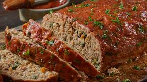

Meatloaf

Home
Delicious and Easy to Make Meatloaf
I have loved meatloaf since I was a child and I'm ready to share my recipe
with you all, so you can enjoy it! This is my personal take on meatloaf, I
do not use gravy as a topping, wait until you see the ingredients. Don't
be afraid or taken aback by what you see. Give it a try and I'm sure
you'll love it!
Ingredients
- 1½ pounds ground beef
- 1 large egg
- 1 onion, chopped
- 1 cup milk
- 1 cup dried bread crumbs
- salt and pepper to taste
- ⅓ cup of ketchup
- 2 tablespoons brown sugar
- 2 tablespoons prepared mustard
Steps
-
Gather the ingredients. Preheat the oven to
350°F(175°C). Lightly grease a 9x5-inch loaf pan.
-
Combine ground beef, onion, milk, bread crumbs, and egg in a large bowl,
and season with salt and pepper. Press mixture evenly into the prepared
loaf pan.
-
Stir ketchup, brown sugar, and mustard together in a small bowl until
smooth, and spread evenly over the meatloaf.
-
Bake in the preheated oven until no longer pink in the center,
about 1 hour. An instant-read thermometer inserted into
the middle should read at least 160°F(70°C).
- Serve hot and enjoy!